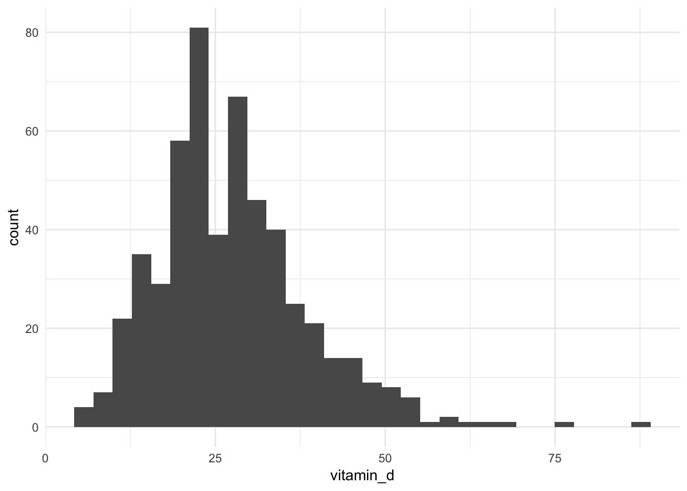
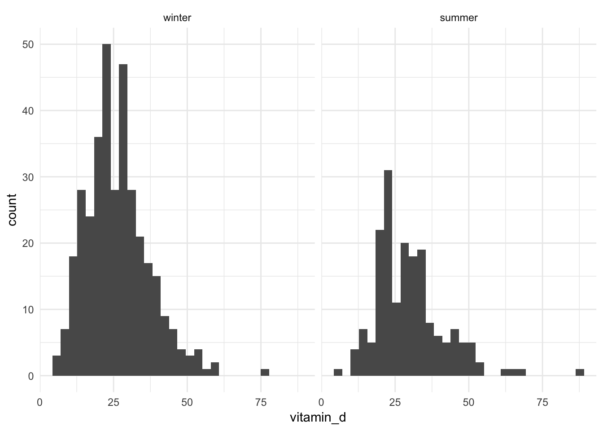
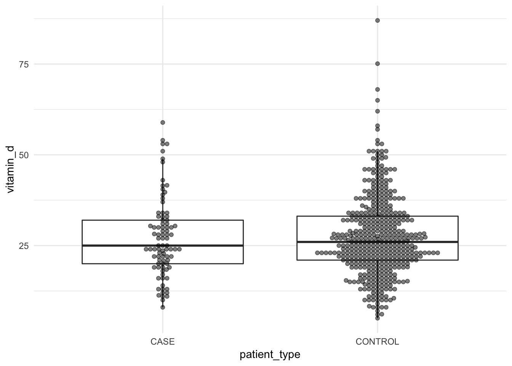
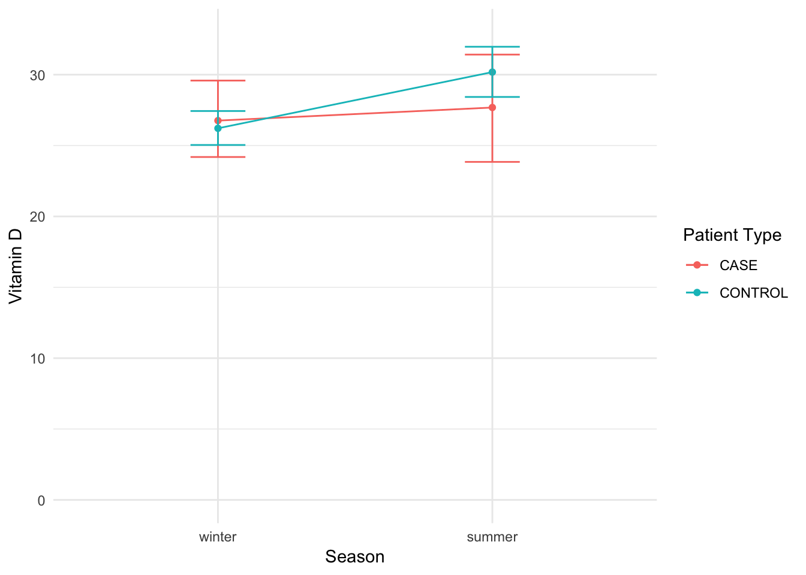
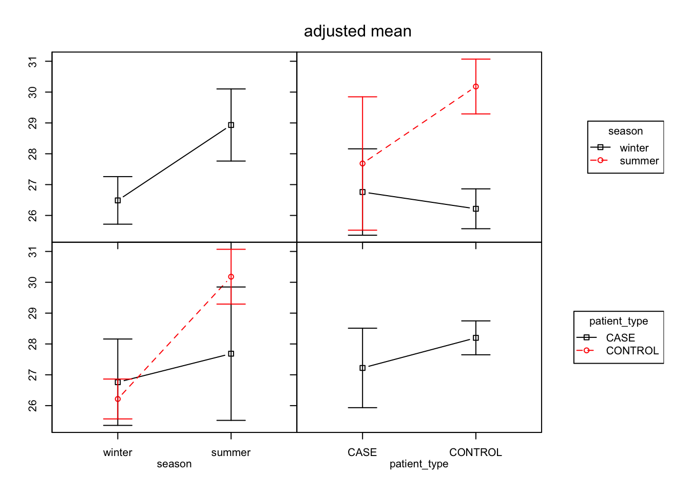

CONJ620: CM 4.5
Integrative Lab
Alison Presmanes Hill
Self-Assessment
Start with your initial submission, and save it as a new file. Then add a sub-section to each of the sections with content called "Self-Assessment".
You may want to add color formatting to further highlight the self-assessment section. You can change the color of the font by using
<span style="color:deeppink">span styles like this</span>.If you want to change the color of a bulleted list, change
spantouland use the same method (pick any color).- My code is provided here so that you can problem solve- if you need to copy and paste, do so in your self-assessment section, but you'll need to include narrative including attribution and reflection on what part of that code chunk you struggled with and why.
How to:
Overview
The goal of this lab is to carefully, thoroughly, and thoughtfully conduct an analysis of variance (ANOVA). You are also asked to communicate clearly about the steps in your analysis process with others, by sharing your R code, output, and narrative. As such, your code cannot "stand alone"- it is meant to complement / enhance / support your narrative. As with our previous integrative lab, this lab will be due in two stages:
- A complete knitted
htmlfile is due on Sakai by Thursday September 13 at 2:30pm. - At that time, you'll be provided with a code key. You are asked to review your initial submission, and reflect on your own code/narrative after reviewing the key thoroughly. Your self-assessment is due on Sakai by Monday September 17th at 2:30pm.
Using the key, your self-assessment should include even more narrative; where you made mistakes, you must discuss and analyze where you went wrong, and correct them without copying/pasting directly from the key (this typically means that you need to include more narrative than we provide in the key). A good self-assessment will include:
- Assessment of the accuracy and completeness of your "initial solutions"
- Correct worked solutions with some discussion and analysis of why your initial solution was incorrect, and reflection on the source of your confusion (if you got an answer correct, this is not necessary)
- Attributions as appropriate to other students who helped you, or other sources such as lecture notes, readings, online resources, etc. that helped you
Headnotes
- This slide deck on post-hoc tests and p-value adjustment may be helpful.
- Also this slide deck on comparing multiple sample means.
- Also this slide deck on the general linear model.
Logistics
You will use R Markdown to construct your analysis report. You'll submit your work as an html file knit from your .Rmd file (please leave the default code chunk options for eval = TRUE and echo = TRUE). Your lab should serve as your own personal cheatsheet in the future for ANOVAs. Give yourself the cheatsheet you deserve!
For all things, code and narrative, if you’re dissatisfied with a result, discuss the problem, what you’ve tried and move on (remember my 30-minute rule). You'll need this loaded at the top:
library(tidyverse)
library(moderndive)
library(broom)
library(infer)
library(multcomp) # for post-hoc tests
library(ggbeeswarm)
library(car) # for Anova
library(phia) # for post-hoc tests
select <- dplyr::select # deals with the namespace conflictData
This data is associated with this publication:
Here is the paper abstract:
"A higher incidence of osteopenia is observed among children with inherited metabolic disorders (inborn errors of metabolism, or IEMs) who consume medical food–based diets that restrict natural vitamin D–containing food sources. We evaluated the vitamin D status of children with IEMs who live in the Pacific Northwest with limited sun exposure and determined whether bone mineral density (BMD) in children with phenylketonuria (PKU), the most common IEM, correlated with diet or biochemical markers of bone metabolism. We hypothesized that children with IEMs would have lower serum vitamin D concentrations than controls and that some children with PKU would have reduced bone mineralization. A retrospective record review of 88 patients with IEMs, and 445 children on unrestricted diets (controls) found the 25-hydroxyvitamin D concentrations were normal and not significantly different between groups (IEM patients, 27.1 ± 10.9; controls, 27.6 ± 11.2). Normal BMD at the hip or spine (−2 < z score < 2) was measured in 20 patients with PKU. There was a correlation between lumbar spine BMD and dietary calcium intake. We saw no evidence of low serum vitamin D in our population of children with IEMs compared with control children. We also found no evidence for reduced BMD in children with PKU on specialized diets, but BMD was associated with calcium intake. Dietary intake of essential nutrients in medical food–based diets supports normal 25-hydroxyvitamin D levels and BMD in children with IEMs, including PKU. The risk of vitamin D deficiency among patients consuming a medical food–based diet is similar to the general population."
Use this code to read in the data:
or_vitd <- read_csv("http://bit.ly/conj620-orvitdcsv",
col_types = cols(
season = col_factor(levels = NULL),
patient_type = col_factor(levels = NULL),
region = col_factor(levels = NULL)))EDA
Explore the patient_type, season, and vitamin_d variables. Recall that a new exploratory data analysis involves three things:
- Looking at the raw values.
- Computing summary statistics of the variables of interest.
- In this case, you should be able to verify this sentence: "A retrospective record review of 88 patients with IEMs, and 445 children on unrestricted diets (controls) found the 25-hydroxyvitamin D concentrations were normal and not significantly different between groups (IEM patients, 27.1 ± 10.9; controls, 27.6 ± 11.2)."
- Creating informative visualizations.
General functions that we have used at this stage:
dplyr::glimpse()skimr::skim()- Given the grouped design, you may wish to do a
dplyr::group_by()first here
- Given the grouped design, you may wish to do a
ggplot2::ggplot()geom_histogram()orgeom_density()orgeom_boxplot()for numeric continuous variables- You may wish to combine these with
facet_wrap()
- You may wish to combine these with
geom_bar()orgeom_col()for categorical variables
You may also find your want to use filter, mutate, arrange, select, or count. Let your questions lead you!
or_vitd %>%
count(season)# A tibble: 2 x 2
season n
<fct> <int>
1 winter 353
2 summer 180or_vitd %>%
count(patient_type)# A tibble: 2 x 2
patient_type n
<fct> <int>
1 CASE 88
2 CONTROL 445or_vitd %>%
count(season, patient_type)# A tibble: 4 x 3
season patient_type n
<fct> <fct> <int>
1 winter CASE 62
2 winter CONTROL 291
3 summer CASE 26
4 summer CONTROL 154or_vitd %>%
group_by(patient_type) %>%
summarize(mean_d = mean(vitamin_d),
sd_d = sd(vitamin_d),
n_group = n())# A tibble: 2 x 4
patient_type mean_d sd_d n_group
<fct> <dbl> <dbl> <int>
1 CASE 27.0 10.9 88
2 CONTROL 27.6 11.2 445ggplot(or_vitd, aes(x = vitamin_d)) +
geom_histogram()
ggplot(or_vitd, aes(x = vitamin_d)) +
geom_histogram() +
facet_wrap(~season)
ggplot(or_vitd, aes(x = patient_type, y = vitamin_d)) +
geom_boxplot(outlier.shape = NA) +
geom_beeswarm(alpha = .5)
ggplot(or_vitd, aes(x = season, y = vitamin_d)) +
geom_boxplot(outlier.shape = NA) +
geom_quasirandom(alpha = .5, method = "smiley")
ggplot(or_vitd, aes(x = season, y = vitamin_d)) +
geom_boxplot(outlier.shape = NA) +
geom_quasirandom(alpha = .5, method = "smiley") +
facet_wrap(~patient_type)
Comparing many means
- Create a plot of the mean vitamin d levels (use
stat_summarywithfun.data = mean_cl_boot- this gives you the mean standard error from 1000 bootstrapped replicates) across season, colored by patient type. - State the null and alternative hypotheses for the omnibus ANOVA.
- Hazard a guess as to (a) whether there are any main effects of season or patient type, and (b) whether you think there is a significant interaction between the two variables (that is, does the effect of one variable seem to depend on the level of the other variable)? Some examples are if you think patient type matters but only in the summer, or if season matters more for cases than controls.
Comparing many means- solutions
- The null hypotheses are (consider factor A =
patient_typeand factor B =season): - From the plot, it looks like there is a main effect of factor B (
season) [summer looks higher than winter, which makes sense given the response variable is Vitamin D levels]. I don't see evidence for a main effect of factor A (patient_type). An interaction is unlikely given the range of these confidence intervals. If they were tighter, I might guess that controls see more of an effect of season than cases do (i.e., the difference between summer and winter looks larger to me for controls than for cases). But again, the CIs are wide here, so I don't believe there is an actual interaction (I addedcoord_cartesianhere so you could really see).
ggplot(or_vitd, aes(x = season, y = vitamin_d, colour = patient_type)) +
stat_summary(fun.y = mean, geom = "point") +
stat_summary(fun.y = mean, geom = "line", aes(group = patient_type)) +
stat_summary(fun.data = mean_cl_boot, geom = "errorbar", width = 0.2) +
labs(x = "Season",
y = "Vitamin D",
colour = "Patient Type") +
coord_cartesian(ylim = c(0, 33))
| The \(H_0\) (null hypothesis) family: | The \(H_1\) (alternative hypothesis) family: |
|---|---|
| \(H_{0_A}\): no effect of factor A | \(H_{1_A}\): significant effect of factor A |
| \(H_{0_B}\): no effect of factor B | \(H_{1_B}\): significant effect of factor B |
| \(H_{0_{A*B}}\): no interaction between factors A and B | \(H_{1_{A*B}}\): significant interaction between factors A and B |
vitd_mod <- lm(vitamin_d ~ patient_type, data = or_vitd)
get_regression_table(vitd_mod)# A tibble: 2 x 7
term estimate std_error statistic p_value lower_ci upper_ci
<chr> <dbl> <dbl> <dbl> <dbl> <dbl> <dbl>
1 intercept 27.0 1.19 22.8 0 24.7 29.4
2 patient_typeCONT… 0.555 1.3 0.427 0.67 -2.00 3.11get_regression_summaries(vitd_mod)# A tibble: 1 x 8
r_squared adj_r_squared mse rmse sigma statistic p_value df
<dbl> <dbl> <dbl> <dbl> <dbl> <dbl> <dbl> <dbl>
1 0 -0.002 124. 11.1 11.1 0.182 0.67 2Two-way ANCOVA
Let's start with two predictors in our ANOVA model, using addition first (i.e., +). Variables as covariates are typically added (+), and their effects are assumed to be additive, so this is called an analysis of covariance (ANCOVA). No interaction term is estimated, meaning we are not allowing for estimated non-parallel lines.
Our two predictors will be:
patient_type: 2 levels (case vs. control)season: 2 levels (winter vs. summer)
When we include another variable in our model, like season, then our estimate of the effect of patient_type is interpreted holding the value of the covariate fixed, just like in multiple regression.
First, predict
vitamin_dwithpatient_type;seasonshould be the second predictor in yourlm. Runanovaon thelmobject.Next, try switching the order of the two predictors (so,
seasonshould now be the first predictor in yourlmmodel), then runanovaon the newlmobject. What do you notice?At this point, you may wish to examine each
lmobject usingmoderndive::get_regression_table(). Do the regression coefficients change depending on the order of the predictors?Remember, the
anova()command as we have used it before was used to compare two nested models. The null hypothesis was that the more complicated model was not better than the less complicated model. Use the code below to compare each of your above models to a model with only the first predictor. Write a few sentences describing the output of this code, and how it helps you understand the null/alternative hypotheses being tested whenvitamin_d ~ patient_type + seasonversusvitamin_d ~ season + patient_type(and how they are different).
# patient only
vitd_patient <- lm(vitamin_d ~ patient_type, data = or_vitd)
anova(vitd_patient, vitd_plusseason)
# season only
vitd_season <- lm(vitamin_d ~ season, data = or_vitd)
anova(vitd_season, vitd_pluspatient)Two-way ANCOVA-solutions
- First, predict
vitamin_dwithpatient_type;seasonshould be the second predictor in yourlm. Runanovaon thelmobject.
vitd_plusseason <- lm(vitamin_d ~ patient_type + season, data = or_vitd)
anova(vitd_plusseason)Analysis of Variance Table
Response: vitamin_d
Df Sum Sq Mean Sq F value Pr(>F)
patient_type 1 23 22.64 0.1861 0.6663360
season 1 1456 1455.90 11.9681 0.0005848 ***
Residuals 530 64474 121.65
---
Signif. codes: 0 '***' 0.001 '**' 0.01 '*' 0.05 '.' 0.1 ' ' 1- Next, try switching the order of the two predictors (so,
seasonshould now be the first predictor in yourlmmodel), then runanovaon the newlmobject. What do you notice?
The results are different. The pattern is the same in terms of significance, but the exact F/p values are not.
vitd_pluspatient <- lm(vitamin_d ~ season + patient_type, data = or_vitd)
anova(vitd_pluspatient)Analysis of Variance Table
Response: vitamin_d
Df Sum Sq Mean Sq F value Pr(>F)
season 1 1468 1468.05 12.0680 0.0005549 ***
patient_type 1 10 10.49 0.0862 0.7691601
Residuals 530 64474 121.65
---
Signif. codes: 0 '***' 0.001 '**' 0.01 '*' 0.05 '.' 0.1 ' ' 1- At this point, you may wish to examine each
lmobject usingmoderndive::get_regression_table(). Do the regression coefficients change depending on the order of the predictors?
No they do not!
get_regression_table(vitd_plusseason)# A tibble: 3 x 7
term estimate std_error statistic p_value lower_ci upper_ci
<chr> <dbl> <dbl> <dbl> <dbl> <dbl> <dbl>
1 intercept 26 1.21 21.4 0 23.6 28.4
2 patient_typeCONT… 0.378 1.29 0.294 0.769 -2.15 2.91
3 seasonsummer 3.50 1.01 3.46 0.001 1.51 5.48get_regression_table(vitd_pluspatient)# A tibble: 3 x 7
term estimate std_error statistic p_value lower_ci upper_ci
<chr> <dbl> <dbl> <dbl> <dbl> <dbl> <dbl>
1 intercept 26 1.21 21.4 0 23.6 28.4
2 seasonsummer 3.50 1.01 3.46 0.001 1.51 5.48
3 patient_typeCONT… 0.378 1.29 0.294 0.769 -2.15 2.91- Remember, the
anova()command as we have used it before was used to compare two nested models. The null hypothesis was that the more complicated model was not better than the less complicated model. Use the code below to compare each of your above models to a model with only the first predictor. Write a few sentences describing the output of this code, and how it helps you understand the null/alternative hypotheses being tested whenvitamin_d ~ patient_type + seasonversusvitamin_d ~ season + patient_type(and how they are different).
# patient only
vitd_patient <- lm(vitamin_d ~ patient_type, data = or_vitd)
anova(vitd_patient, vitd_plusseason)Analysis of Variance Table
Model 1: vitamin_d ~ patient_type
Model 2: vitamin_d ~ patient_type + season
Res.Df RSS Df Sum of Sq F Pr(>F)
1 531 65929
2 530 64474 1 1455.9 11.968 0.0005848 ***
---
Signif. codes: 0 '***' 0.001 '**' 0.01 '*' 0.05 '.' 0.1 ' ' 1# season only
vitd_season <- lm(vitamin_d ~ season, data = or_vitd)
anova(vitd_season, vitd_pluspatient)Analysis of Variance Table
Model 1: vitamin_d ~ season
Model 2: vitamin_d ~ season + patient_type
Res.Df RSS Df Sum of Sq F Pr(>F)
1 531 64484
2 530 64474 1 10.488 0.0862 0.7692The output of the code above shows me that running anova comparing two nested models like this gives me the same statistics as running anova with each lm I created above. What this new output shows me is that the null hypothesis for the first model above is that season does not account for more variability than patient_type alone. The null hypothesis for the second model above is that patient_type does not account for more variability than season alone. So, both anova outputs are actually testing different null/alternative hypotheses.
Types of sums of squares
The majority of the time, if you are interested in doing an ANOVA, it is unlikely that you want output where the order of the predictors in your model formula matters. This type of output is called sequential sums of squares, also known as a Type I ANOVA. Here is more information on the 3 types of sums of squares in the context of an ANOVA:
- Type I: sequential (order matters)
- This is the default in R when you use
anova. - This is rarely what you will be interested in if you are not doing a nested models comparison intentionally.
- This is the default in R when you use
- Type II:
- This type tests for each main effect after the other main effect. Note that no significant interaction is assumed (in other words, you should test for interaction first) and only if AB is not significant, continue with the analysis for main effects).
- Type III:
- This type tests for the presence of a main effect after the other main effect and interaction. However, it is often not interesting to interpret a main effect if interactions are present (generally speaking, if a significant interaction is present, the main effects should not be further analysed). If the interactions are not significant, type II gives a more powerful test.
In this ANOVA predicting vitamind_d, the separate partial effects, or main effects, of patient_type and season would be marginal to the patient_type:season interaction. In general, we neither test nor interpret main effects of explanatory variables that interact. If we can rule out interaction either on theoretical or empirical grounds, then we can proceed to test, estimate, and interpret main effects. It does not generally make sense to specify and fit models that include interaction regressors but that delete main effects that are marginal to them. Such models — which violate the principle of marginality — are interpretable, but they are not broadly applicable.
The bottom line is that for anything beyond a one-way ANOVA (so anything with more than 1 predictor or independent variable), I recommend using car::Anova (capital "A" Anova, not lower case "a" anova) setting the type argument explicitly; from ?Anova:
“Type-II tests are calculated according to the principle of marginality, testing each term after all others, except ignoring the term's higher-order relatives; so-called type-III tests violate marginality, testing each term in the model after all of the others.”
Two-way ANCOVA with Type II SS
Now, we'll perform an ANOVA using the Type II SS. The way to do this is with the car package, using the Anova function with the type = 2 argument. Try using this code:
vitd_add <- lm(vitamin_d ~ season + patient_type, data = or_vitd)
Anova(vitd_add, type = 2)Try switching the order of the predictors again to confirm for yourself that they are in fact the same!
Interpret the output here. Keep in mind that any F value where the factor has only two levels can actually be interpreted without doing post-hoc testing.
Often with ANOVA, you want to plot the adjusted means, which are the fitted/predicted values from the ANOVA model (just as were created with linear regression models we have worked with before). Use this code to use the
phiapackage to calculate the fitted group means and plot them. Read the vignette. Write a few sentences here about the model output and this figure, making sure to note why the plots that contain two colors show lines that are parallel (hint).
vitd_add_means <- interactionMeans(vitd_add)
plot(vitd_add_means)Two-way ANCOVA with Type II SS- solutions
- Try switching the order of the predictors again to confirm for yourself that they are in fact the same!
vitd_add_switch <- lm(vitamin_d ~ patient_type + season, data = or_vitd)
Anova(vitd_add_switch, type = 2)Anova Table (Type II tests)
Response: vitamin_d
Sum Sq Df F value Pr(>F)
patient_type 10 1 0.0862 0.7691601
season 1456 1 11.9681 0.0005848 ***
Residuals 64474 530
---
Signif. codes: 0 '***' 0.001 '**' 0.01 '*' 0.05 '.' 0.1 ' ' 1They are the same.
- Interpret the output here. Keep in mind that any F value where the factor has only two levels can actually be interpreted without doing post-hoc testing.
Since each factor only has two levels, I can say that the main effect of patient_type is not significant, meaning that cases/controls in this study did not differ in terms of vitamin D levels. The main effect of season is significant, meaning that there is a difference in vitamin D levels depending on whether the individual's levels were measured in winter versus summer. From looking at my initial EDA (and using some common sense :), summer > winter.
- Often with ANOVA, you want to plot the adjusted means, which are the fitted/predicted values from the ANOVA model (just as were created with linear regression models we have worked with before). Use this code to use the
phiapackage to calculate the fitted group means and plot them. Read the vignette. Write a few sentences here about the model output and this figure, making sure to note why the plots that contain two colors show lines that are parallel (hint).
vitd_add_means <- interactionMeans(vitd_add)
plot(vitd_add_means)
The top left plot shows the main effect of season, which was significant. The top right plot shows that summer vitamin d levels were higher for both cases and controls. The lines here are parallel because I made them that way- my model did not allow for non-parallel slopes. To do that, I would have had to allow the model to estimate the interaction between season and patient_type. The lower left plot shows the same thing- parallel slopes because the model is restricted to that, but you can see again that summer is higher for both cases and controls, and that cases and controls look pretty similar within season. The upper right and lower left plots both show the interaction of two variables. The lower right plot shows the absence of the main effect of patient_type.
Two-way ANOVA with Type II SS
Now run the same ANOVA analysis, this time allowing your two predictors to interact.
Is the interaction significant? If it is not, then the Type II sums of squares analysis is valid. What do you say?
Use the
phiapackage to plot the fitted means from this model. What do you see? What is different now? (hint).
The following two questions are demos- in this actual context you would not need post-hoc testing.
Attempt to conduct post-hoc comparisons between seasons using Tukey's Honestly Significant Difference method (through the
multcomppackage). What does the error tell you?Now try to use the
phiapackage to do post-hoc tests; use the Bonferroni method for adjusting the p-values.
testInteractions(lm_model, pairwise = "variable_name", adjustment = "p.adjust.method")Two-way ANOVA with Type II SS-solutions
- Is the interaction significant? If it is not, then the Type II sums of squares analysis is valid. What do you say?
- Use the
phiapackage to plot the fitted means from this model. What do you see? What is different now? (hint).
No, I believe the Type II sums of squares analysis is valid.
vitd_int <- lm(vitamin_d ~ season * patient_type, data = or_vitd)
Anova(vitd_int, type = 2)Anova Table (Type II tests)
Response: vitamin_d
Sum Sq Df F value Pr(>F)
season 1456 1 11.9721 0.0005836 ***
patient_type 10 1 0.0862 0.7691226
season:patient_type 143 1 1.1782 0.2782219
Residuals 64330 529
---
Signif. codes: 0 '***' 0.001 '**' 0.01 '*' 0.05 '.' 0.1 ' ' 1vitd_means <- interactionMeans(vitd_int)
plot(vitd_means)
The top left plot shows again the main effect of season, which was significant. The top right plot shows that summer vitamin d levels were higher for both cases and control, but now the lines here are not parallel because I made them that way by allowing the model to estimate the interaction between season and patient_type. The lower left plot shows the same thing- the interaction is not statistically significant because the confidence intervals are so wide. The upper right and lower left plots both show the interaction of two variables. The lower right plot shows the absence of the main effect of patient_type.
The following two questions are demos- in this actual context you would not need post-hoc testing.
- Attempt to conduct post-hoc comparisons between seasons using Tukey's Honestly Significant Difference method (through the
multcomppackage). What does the error tell you?
vitd_mcp <- glht(vitd_int, mcp(season = "Tukey"))Whoops can't do that because there is an interaction term!
- Now try to use the
phiapackage to do post-hoc tests; use the Bonferroni method for adjusting the p-values.
testInteractions(vitd_int, pairwise = "season", fixed = "patient_type", adjustment = "bonferroni")F Test:
P-value adjustment method: bonferroni
Value Df Sum of Sq F Pr(>F)
winter-summer : CASE -0.9249 1 16 0.1289 1.0000000
winter-summer : CONTROL -3.9654 1 1584 13.0214 0.0006744 ***
Residuals 529 64330
---
Signif. codes: 0 '***' 0.001 '**' 0.01 '*' 0.05 '.' 0.1 ' ' 1testInteractions(vitd_int, pairwise = "patient_type", fixed = "season", adjustment = "bonferroni")F Test:
P-value adjustment method: bonferroni
Value Df Sum of Sq F Pr(>F)
CASE-CONTROL : winter 0.54387 1 15 0.1243 1.0000
CASE-CONTROL : summer -2.49655 1 139 1.1401 0.5722
Residuals 529 64330 We see that when comparing winter vs summer within patient_type, the effect of season is only significant for controls but not cases. Vice versa, the effect of patient_type is not significant in either season. A really great example of things you cannot do if you don't get a significant interaction in the omnibus results! Notice that the overall interaction between patient_type and season was not significant.
Final two-way ANOVA
Try a two-way ANOVA with Type II SS to predict vitamin D from season and region, allowing the two predictors to interact.
Interpret the output here. Is the interaction significant? If it is not, then the Type II sums of squares analysis is valid. What do you say?
Use the
phiapackage to plot the fitted means from this model. What do you see?
vitd_region <- lm(vitamin_d ~ season * region, data = or_vitd)
Anova(vitd_region, type = 2)Anova Table (Type II tests)
Response: vitamin_d
Sum Sq Df F value Pr(>F)
season 1461 1 11.9157 0.0006015 ***
region 59 3 0.1615 0.9222116
season:region 60 3 0.1631 0.9212087
Residuals 64365 525
---
Signif. codes: 0 '***' 0.001 '**' 0.01 '*' 0.05 '.' 0.1 ' ' 1vitd_means <- interactionMeans(vitd_region)
plot(vitd_means)
The following two questions are demos- in this actual context you would certainly be p-hacking your way to glory if you ran all these comparisons, even with p-value adjustment!
Imagine we had gotten a significant effect of region. Use
phia::testInteractionsto test all pairwise differences between regions using Bonferroni p-value adjustment. Any differences stand out?Use the same function, adding the
fixed = "season"argument to compare all pairwise differences between regions separately for each season, again using Bonferroni p-value adjustment. Do you feel confident there is no effect of region, and no interaction between region and season?
Final two-way ANOVA- solutions
vitd_region <- lm(vitamin_d ~ season * region, data = or_vitd)
Anova(vitd_region, type = 2)Anova Table (Type II tests)
Response: vitamin_d
Sum Sq Df F value Pr(>F)
season 1461 1 11.9157 0.0006015 ***
region 59 3 0.1615 0.9222116
season:region 60 3 0.1631 0.9212087
Residuals 64365 525
---
Signif. codes: 0 '***' 0.001 '**' 0.01 '*' 0.05 '.' 0.1 ' ' 1vitd_means <- interactionMeans(vitd_region)
plot(vitd_means)
- Interpret the output here. Is the interaction significant? If it is not, then the Type II sums of squares analysis is valid. What do you say?
Type II results appear valid- no interaction. There is a significant main effect of season (winter < summer), and no main effect of region.
- Use the
phiapackage to plot the fitted means from this model. What do you see?
Main effect of season again on top left, summer > winter. No matter the region, summer > winter (no interaction) on top right. Bottom left, summer > winter for all regions but biggest for SE (steepest slope) and least for NE (shallowest slope). Bottom right, no real differences between regions to speak of (although tighter CIs due to larger sample sizes in NW and SW.)
The following two questions are demos- in this actual context you would certainly be p-hacking your way to glory if you ran all these comparisons, even with p-value adjustment!
- Imagine we had gotten a significant effect of region. Use
phia::testInteractionsto test all pairwise differences between regions using Bonferroni p-value adjustment. Any differences stand out?
See below...
- Use the same function, adding the
fixed = "season"argument to compare all pairwise differences between regions separately for each season, again using Bonferroni p-value adjustment. Do you feel confident there is no effect of region, and no interaction between region and season?
testInteractions(vitd_region, pairwise = "region", adjustment = "bonferroni")F Test:
P-value adjustment method: bonferroni
Value Df Sum of Sq F Pr(>F)
NW-NE -0.81633 1 9 0.0715 1
NW-SE -1.70591 1 60 0.4919 1
NW-SW 0.02702 1 0 0.0005 1
NE-SE -0.88958 1 7 0.0547 1
NE-SW 0.84335 1 9 0.0713 1
SE-SW 1.73293 1 56 0.4576 1
Residuals 525 64365 testInteractions(vitd_region, pairwise = "region", fixed = "season", adjustment = "bonferroni")F Test:
P-value adjustment method: bonferroni
Value Df Sum of Sq F Pr(>F)
NW-NE : winter -2.5286 1 49 0.4032 1
NW-SE : winter -0.7661 1 10 0.0799 1
NW-SW : winter 0.0690 1 0 0.0026 1
NE-SE : winter 1.7625 1 17 0.1403 1
NE-SW : winter 2.5976 1 50 0.4067 1
SE-SW : winter 0.8351 1 11 0.0864 1
NW-NE : summer 0.8959 1 5 0.0375 1
NW-SE : summer -2.6457 1 53 0.4289 1
NW-SW : summer -0.0149 1 0 0.0001 1
NE-SE : summer -3.5417 1 43 0.3508 1
NE-SW : summer -0.9109 1 4 0.0356 1
SE-SW : summer 2.6308 1 47 0.3808 1
Residuals 525 64365 yup, nothing. Great example of how I can end up doing 6 x 2 significance tests, but if I don't have a significant interation or am strongly guided by theory, I'm p-hacking (looking for something - anything - significant).